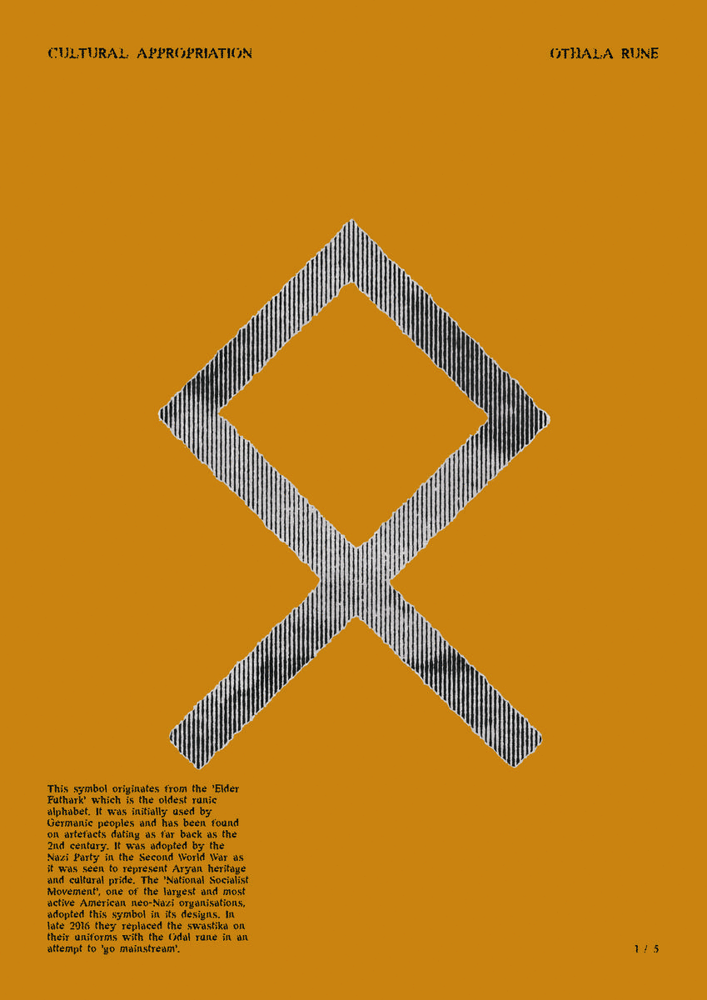
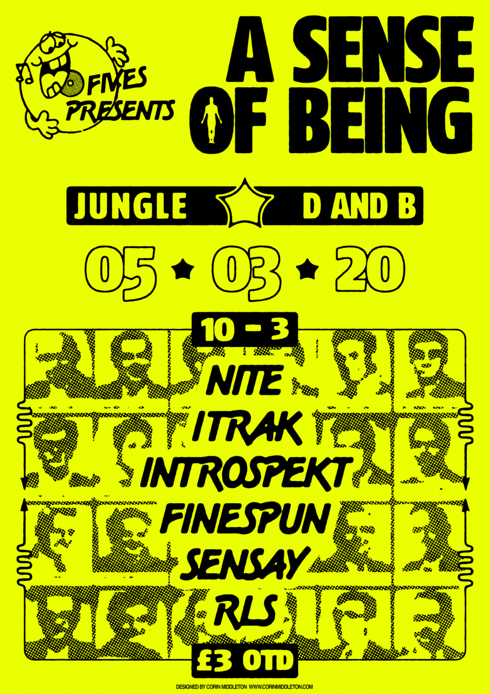
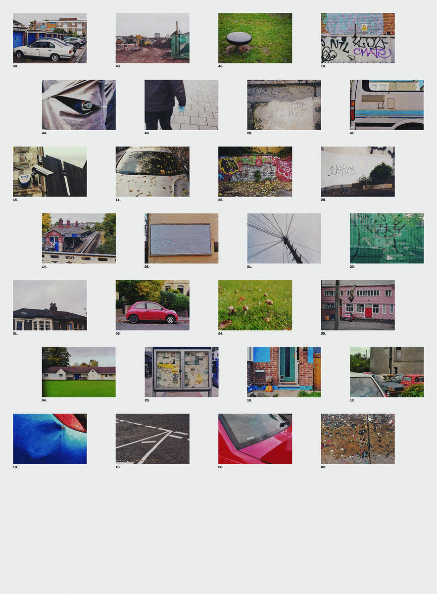

✸ CORIN MIDDLETON ✸

Series of 5 A3 posters on the theme of cultural appropriation.

Poster design for 'A Sense of Being' music event. (2020)

Double sided poster made up of 35mm film photographs I took that each responded to a prompt word. A2, printed on newsprint.
BACK